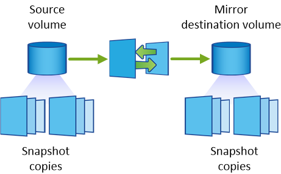
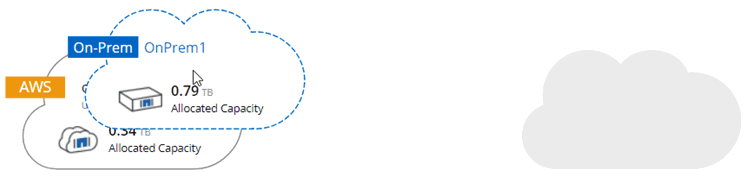
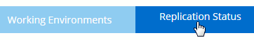
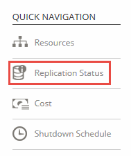
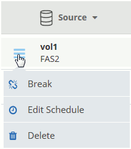

クラウドとの間でデータをレプリケートする
データ転送のための 1 回限りのデータレプリケーションを選択するか、ディザスタリカバリまたは長期保存のための定期的なスケジュールを選択することで、作業環境間でデータをレプリケートできます。
Cloud Manager では、 SnapMirror と SnapVault テクノロジを使用して、別々のシステム上のボリューム間でのデータレプリケーションを簡素化します。ソースボリュームとデスティネーションボリュームを特定し、レプリケーションポリシーとスケジュールを選択するだけで済みます。Cloud Manager は、必要なディスクを購入し、関係を設定し、レプリケーションポリシーを適用してから、ボリューム間のベースライン転送を開始します。
| ベースライン転送には、ソースデータのフルコピーが含まれます。その後の転送には、ソースデータの差分コピーが含まれます。 |
レプリケーションポリシーの選択
レプリケーションポリシーは、ストレージシステムがソースボリュームからデスティネーションボリュームにデータをレプリケートする方法を定義します。Cloud Manager でデータレプリケーションをセットアップするときは、レプリケーションポリシーを選択する必要があります。
レプリケーションポリシーの機能
ONTAP オペレーティングシステムでは、 Snapshot コピーと呼ばれるバックアップが自動的に作成されます。Snapshot コピーは、ボリュームの読み取り専用イメージで、ある時点のファイルシステムの状態をキャプチャします。
システム間でデータをレプリケートする場合、ソースボリュームからデスティネーションボリュームに Snapshot コピーをレプリケートします。レプリケーションポリシーは、ソースボリュームからデスティネーションボリュームにレプリケートする Snapshot コピーを指定します。
| レプリケーションポリシーは保護ポリシーとも呼ばれます。これは、 SnapMirror および SnapVault テクノロジを使用して、ディザスタリカバリ保護とディスクツーディスクバックアップおよびリカバリを実現するためです。 |
次の図は、 Snapshot コピーとレプリケーションポリシーの関係を示しています。

レプリケーションポリシーのタイプ
レプリケーションポリシーには、次の 3 種類があります。
-
ミラーポリシーは、新しく作成された Snapshot コピーをデスティネーションボリュームに複製します。
これらの Snapshot コピーを使用すると、災害復旧や 1 回限りのデータ複製に備えて、ソース・ボリュームを保護できます。データアクセス用のデスティネーションボリュームは、いつでもアクティブにできます。
-
バックアップポリシーは、特定の Snapshot コピーをデスティネーションボリュームに複製し、通常はソースボリュームよりも長い期間保持します。
データが破損または損失した場合に、これらの Snapshot コピーからデータをリストアし、標準準拠やその他のガバナンス関連の目的で保持できます。
-
ミラーおよびバックアップポリシーは、ディザスタリカバリと長期保存の両方を提供します。
各システムには、デフォルトのミラーおよびバックアップポリシーが含まれており、多くの状況に適しています。カスタムポリシーが必要な場合は、 System Manager を使用して独自のポリシーを作成できます。
次の図は、ミラーポリシーとバックアップポリシーの違いを示しています。ミラーポリシーは、ソースボリュームで使用可能な Snapshot コピーをミラーリングします。

通常、バックアップポリシーでは、ソースボリュームに保持されている Snapshot コピーよりも長い期間 Snapshot コピーが保持されます。

バックアップポリシーの仕組み
ミラーポリシーとは異なり、バックアップ（ SnapVault ）ポリシーは、特定の Snapshot コピーをデスティネーションボリュームに複製します。デフォルトポリシーの代わりに独自のポリシーを使用する場合は、バックアップポリシーの仕組みを理解することが重要です。
Snapshot コピーのラベルとバックアップ・ポリシーの関係を理解する
Snapshot ポリシーは、システムによるボリュームの Snapshot コピーの作成方法を定義します。このポリシーでは、 Snapshot コピーを作成するタイミング、保持するコピー数、ラベルの作成方法を指定します。たとえば、システムでは毎日午前 12 時 10 分に Snapshot コピーを 1 つ作成し、最新のコピーを 2 つ保持して、「 daily 」というラベルを付けることができます。
バックアップポリシーには、デスティネーションボリュームに複製するラベル付き Snapshot コピーと保持するコピー数を指定するルールが含まれています。バックアップポリシーで定義されたラベルは、スナップショットポリシーで定義された 1 つ以上のラベルと一致する必要があります。そうしないと、システムは Snapshot コピーを複製できません。
たとえば、「 daily 」ラベルと「 weekly 」ラベルを含むバックアップポリシーでは、これらのラベルのみを含む Snapshot コピーのレプリケーションが行われます。次の図に示すように、他の Snapshot コピーはレプリケートされません。

デフォルトポリシーとカスタムポリシー
デフォルトの Snapshot ポリシーでは、毎時、毎日、および毎週の Snapshot コピーが作成されます。 Snapshot コピーは 6 個の時間単位、 2 個の日単位、および 2 個の週単位 Snapshot コピーが保持されます。
デフォルトの Snapshot ポリシーでは、デフォルトのバックアップポリシーを簡単に使用できます。デフォルトのバックアップポリシーでは、毎日および毎週の Snapshot コピーが複製され、毎日 7 個、毎週 52 個の Snapshot コピーが保持されます。
カスタムポリシーを作成する場合は、これらのポリシーで定義されたラベルが一致している必要があります。System Manager を使用してカスタムポリシーを作成できます。
データレプリケーションの要件
データを複製する前に、 Cloud Volumes ONTAP システムと ONTAP クラスタの両方で特定の要件が満たされていることを確認する必要があります。
- バージョン要件
-
データを複製する前に、ソースボリュームとデスティネーションボリュームで互換性のある ONTAP バージョンが実行されていることを確認する必要があります。詳細については、『データ保護電源ガイド』を参照してください。
- Cloud Volumes ONTAP 固有の要件
-
-
インスタンスのセキュリティグループには、必要なインバウンドルールとアウトバウンドルールが含まれている必要があります。具体的には、 ICMP とポート 10000 、 11104 、および 11105 のルールです。
これらのルールは、事前定義されたセキュリティグループに含まれています。
-
異なるサブネットにある 2 つの Cloud Volumes ONTAP システム間でデータをレプリケートするには、サブネットを一緒にルーティングする必要があります（これがデフォルト設定です）。
-
AWS の Cloud Volumes ONTAP システムと Azure のシステムの間でデータをレプリケートするには、 AWS VPC と Azure VNet の間に VPN 接続が必要です。
-
- ONTAP クラスタ固有の要件
-
-
アクティブな SnapMirror ライセンスがインストールされている必要があります。
-
クラスタが社内にある場合は、企業ネットワークから AWS または Azure （通常は VPN 接続）に接続する必要があります。
-
ONTAP クラスタは、サブネット、ポート、ファイアウォール、およびクラスタの追加要件を満たしている必要があります。
詳細については、ご使用の ONTAP バージョンの『 Cluster and SVM Peering Express Guide 』を参照してください。
-
システム間でのデータのレプリケーション
Cloud Volumes ONTAP システムと ONTAP クラスタ間でデータをレプリケートするには、ワンタイムデータレプリケーションを選択します。これにより、クラウドとの間でデータを移動したり、定期的にスケジュールを作成したりすることができ、ディザスタリカバリや長期保存に役立ちます。
Cloud Manager は、シンプルなファンアウト / カスケードデータ保護構成をサポートしています。
-
シンプルな構成では、ボリューム A からボリューム B へのレプリケーションが行われます
-
ファンアウト構成では、ボリューム A から複数のデスティネーションへのレプリケーションが行われます。
-
カスケード構成では、レプリケーションはボリューム A からボリューム B 、およびボリューム B からボリューム C に行われます
システム間で複数のデータレプリケーションを設定することにより、 Cloud Manager でファンアウトとカスケード構成を構成できます。たとえば、システム A からシステム B にボリュームを複製し、システム B からシステム C に同じボリュームを複製します
-
[ 作業環境 ] ページで、ソースボリュームを含む作業環境を選択し、ボリュームをレプリケートする作業環境にドラッグします。

-
[Source and Destination Peering Setup] ページが表示されたら、クラスタピア関係のクラスタ間 LIF をすべて選択します。
クラスタピアがペアワイズフルメッシュ接続を持つようにクラスタ間ネットワークを設定する必要があります。つまり、クラスタピア関係のクラスタの各ペアが、すべてのクラスタ間 LIF 間を接続できるようにします。
これらのページは、複数の LIF を持つ ONTAP クラスタがソースまたはデスティネーションである場合に表示されます。
-
ソースボリュームの選択ページで、レプリケートするボリュームを選択します。
-
［ デスティネーションボリューム名と階層化 ］ ページで、デスティネーションボリューム名を指定し、基盤となるディスクタイプを選択し、詳細オプションを変更して、 ［ 続行 ］ をクリックします。
デスティネーションが ONTAP クラスタの場合は、デスティネーション SVM とアグリゲートも指定する必要があります。
-
[ 最大転送レート（ Max Transfer Rate ） ] ページで、データを転送できる最大転送レート（メガバイト / 秒）を指定します。
-
[ レプリケーションポリシー ] ページで、デフォルトポリシーの 1 つを選択するか、 [ 追加ポリシー ] をクリックして、いずれかの高度なポリシーを選択します。
-
[ スケジュール ] ページで、ワンタイムコピーまたは定期的なスケジュールを選択します。
いくつかのデフォルトスケジュールを使用できます。別のスケジュールが必要な場合は、 System Manager を使用してデスティネーションクラスタに新しいスケジュールを作成する必要があります。
-
[ 確認 ] ページで、選択内容を確認し、 [ 移動 ] をクリックします。
Cloud Manager がデータレプリケーションプロセスを開始します。レプリケーションの詳細は、 Replication Status ページで確認できます。
データレプリケーションのスケジュールと関係の管理
2 つのシステム間でデータレプリケーションをセットアップしたら、 Cloud Manager からデータレプリケーションスケジュールと関係を管理できます。
-
[ 作業環境 ] ページで、テナントまたは特定の作業環境に割り当てられているすべての作業環境のレプリケーションステータスを表示します。
オプション アクション テナントに割り当てられているすべての作業環境
ナビゲーションバーの Replication Status をクリックします。

特定の作業環境
作業環境を選択し、 [ レプリケーションステータス ] をクリックします。

-
データレプリケーションリレーションシップのステータスを確認して、正常であることを確認します。
関係のステータスがアイドルで、ミラーの状態が初期化されていない場合は、定義されたスケジュールに従ってデータレプリケーションを実行するために、デスティネーションシステムから関係を初期化する必要があります。この関係は、 System Manager またはコマンドラインインターフェイス（ CLI ）を使用して初期化できます。これらの状態は、デスティネーションシステムに障害が発生してからオンラインに戻ると表示されます。 -
ソースボリュームの横にあるメニューアイコンを選択し、使用可能なアクションのいずれかを選択します。

次の表に、使用可能なアクションを示します。
アクション 説明 休憩
ソースボリュームとデスティネーションボリューム間の関係を解除し、データアクセスのためにデスティネーションボリュームをアクティブにします。
このオプションは通常、データの破損、偶発的な削除、オフライン状態などのイベントが原因でソースボリュームがデータを処理できない場合に使用します。
データアクセス用のデスティネーションボリュームの設定およびソースボリュームの再アクティブ化の詳細については、『 ONTAP 9 Volume Disaster Recovery Express Guide 』を参照してください。再同期
リバース再同期
ソースボリュームとデスティネーションボリュームの役割を逆にします。元のソースボリュームの内容は、デスティネーションボリュームの内容によって上書きされます。これは、オフラインになったソースボリュームを再アクティブ化する場合に役立ちます。
前回のデータレプリケーションからソースボリュームが無効になったまでの間に元のソースボリュームに書き込まれたデータは保持されません。スケジュールを編集します
データレプリケーションの別のスケジュールを選択できます。
ポリシー情報
データレプリケーションリレーションシップに割り当てられている保護ポリシーを表示します。
最大転送レートを編集します
データを転送できる最大レート（キロバイト / 秒）を編集できます。
削除
ソースボリュームとデスティネーションボリューム間のデータ保護関係を削除します。つまり、ボリューム間でデータレプリケーションが行われなくなります。この操作では、データアクセスのデスティネーションボリュームはアクティブ化されません。また、システム間に他のデータ保護関係がない場合は、クラスタピア関係と Storage Virtual Machine （ SVM ）ピア関係も削除されます。
アクションを選択すると、 Cloud Manager によって関係またはスケジュールが更新されます。
 GitHub
GitHub